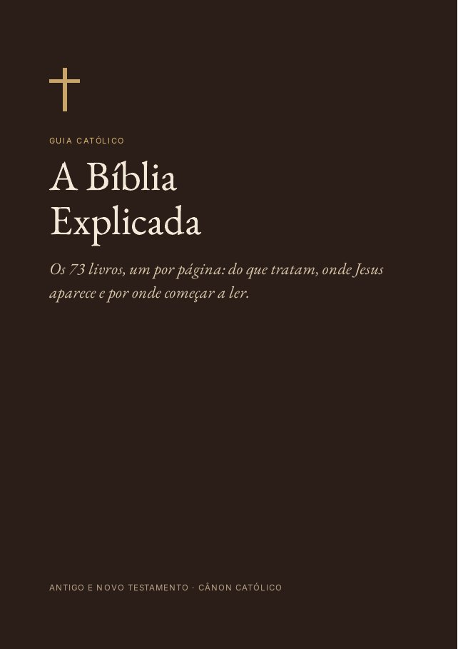
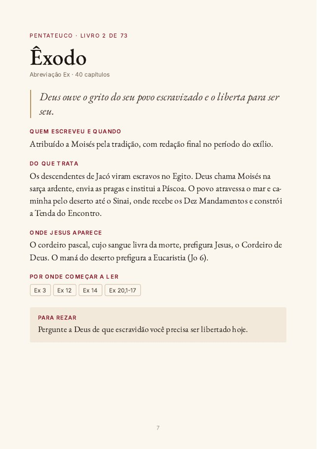
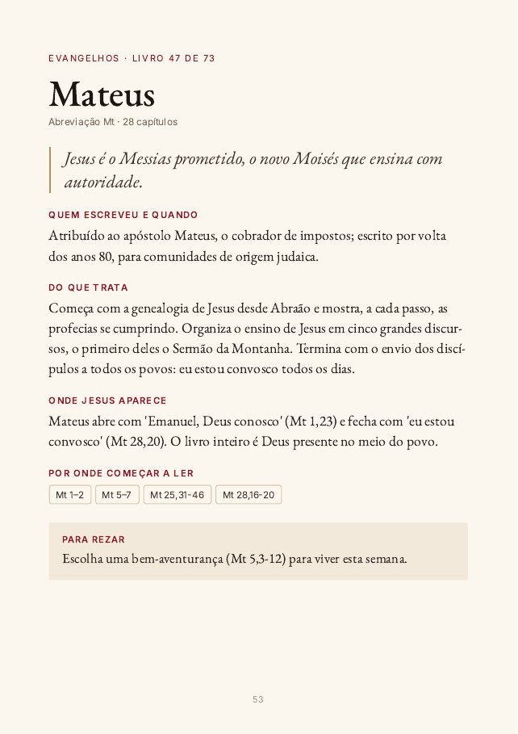
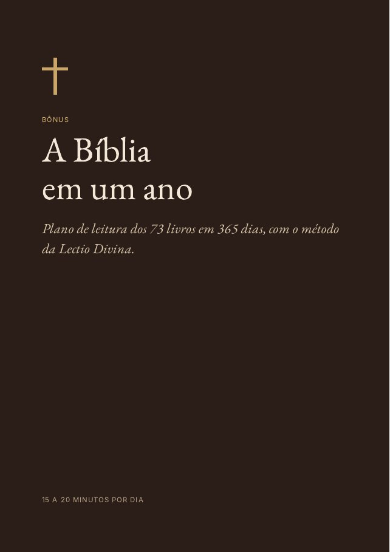
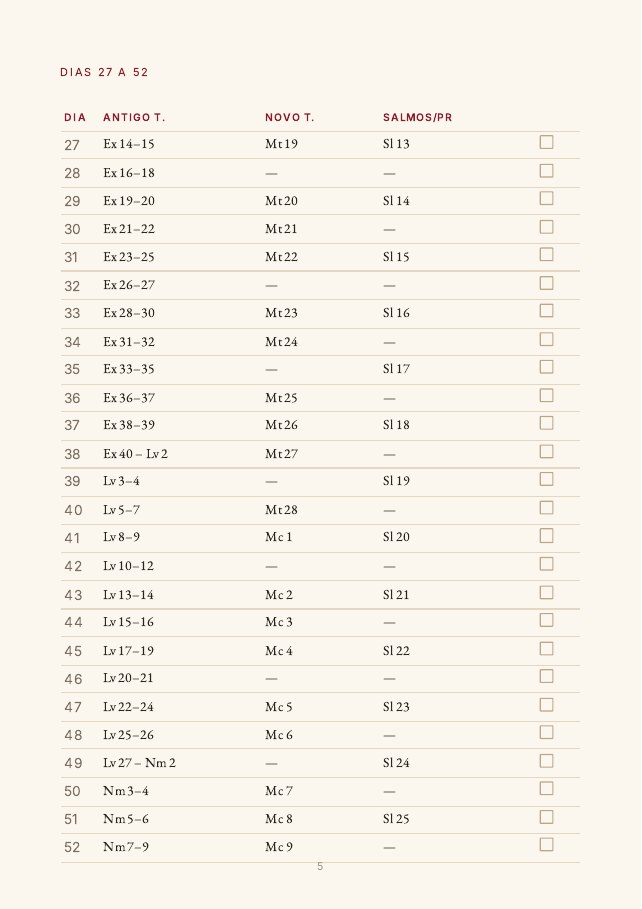
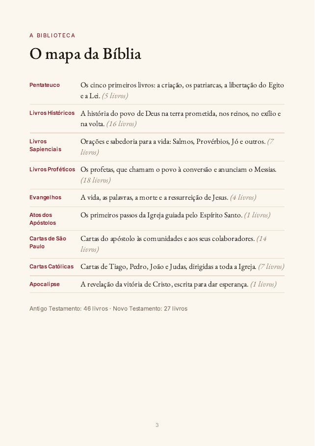

Para quem já tentou ler a Bíblia e travou. Cada um dos 73 livros em uma página: do que trata, onde Jesus aparece e por onde começar a ler.



É a história mais comum entre católicos que decidem ler a Bíblia. O começo é bonito, depois vêm leis de sacrifício, listas de nomes, profetas falando de reinos que a gente nunca ouviu falar. A pessoa fecha o livro achando que o problema é ela.
O problema é que a Bíblia não é um livro só. É uma biblioteca de 73 livros, escritos ao longo de mais de mil anos, com estilos diferentes: história, poesia, lei, profecia, cartas. Sem saber o que é cada um, fica difícil entender qualquer um.
Este guia é o mapa dessa biblioteca.
Boa parte dos materiais sobre a Bíblia que circulam na internet foi feita para Bíblias protestantes, com 66 livros. Ficam de fora Tobias, Judite, Macabeus, Sabedoria, Eclesiástico e Baruc, além de partes de Ester e Daniel, livros que a Igreja lê na Missa.
Aqui estão os 73, na ordem da Bíblia católica, com as referências que você encontra na sua tradução (CNBB, Ave-Maria, Jerusalém ou Pastoral), e com a leitura que a Igreja faz deles: o Protoevangelho em Gênesis 3,15, Maria em Apocalipse 12, a base bíblica da oração pelos falecidos em 2 Macabeus.
Um plano de 365 dias com três leituras curtas por dia: Antigo Testamento, Novo Testamento e Salmos. São 15 a 20 minutos. Cada dia tem um quadradinho para marcar, e o plano cobre todos os capítulos dos 73 livros.
Junto vem o passo a passo da Lectio Divina, o jeito de rezar com a Bíblia que a Igreja ensina desde os primeiros monges.



No checkout, você pode incluir o plano A Bíblia em um Ano com a Lectio Divina por mais R$ 9,90.
Se o guia não for o que você esperava, peça o reembolso em até 7 dias pela própria plataforma de pagamento. Você recebe o valor de volta, sem precisar explicar o motivo.
Logo depois do pagamento, você recebe no e-mail o acesso à área de membros, onde lê o guia ou baixa o PDF. No Pix a liberação é na hora; no cartão, em poucos minutos.
Sim. O guia foi diagramado em tamanho A5, que fica confortável na tela do celular. Também dá para imprimir.
Serve para as Bíblias católicas em português: CNBB, Ave-Maria, Jerusalém, Pastoral e outras. Nos Salmos, quando a numeração muda, as duas aparecem.
Não. É um guia de estudo feito por leigos, fiel à tradição católica e às notas das Bíblias católicas. Não substitui a catequese nem a orientação do seu pároco.
Não. O guia explica os livros e indica os trechos; a leitura você faz na sua própria Bíblia. É assim que ele funciona melhor: o guia ao lado, a Bíblia aberta.